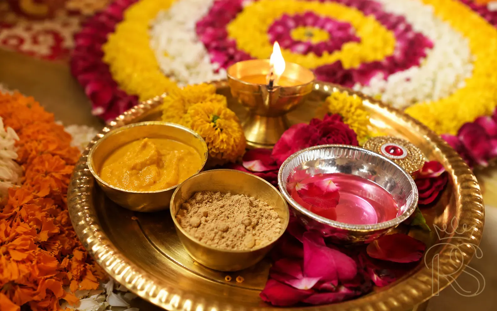

Of all the pre-wedding functions in an Indian wedding, the Haldi ceremony holds something irreplaceable — a rawness, a tenderness, a splash of turmeric-tinged chaos that no amount of planning can fully choreograph. It is the moment before the transformation. The bride and groom, surrounded by the people who love them most, are anointed with haldi in a ritual that spans thousands of years. This guide covers everything you need to know: the rituals and their meaning, what to wear, how to decorate, and the most beautiful Haldi ideas shaping 2026 weddings.
🌿
Also Known As
Pithi / Ubtan / Manjha
📅
When Held
Morning before wedding day
💛
Dress Code
Yellow, orange, white — no dark colours
⏱
Duration
1.5 – 3 hours typically
01
What Is the Haldi Ceremony & Why Does It Matter?
The Ritual & Its Significance

The haldi thali typically contains turmeric paste, sandalwood, rose water, and seasonal flowers — each ingredient carrying its own significance.
Haldi Ritual
Indian Tradition
Pre-Wedding
Hindu Wedding
The Haldi ceremony — known as Pithi in Punjab, Ubtan in Rajasthan, and Manjha in parts of South India — is one of the oldest and most universally observed pre-wedding rituals across Indian communities. The ceremony involves family members and close friends applying a paste of turmeric (haldi), sandalwood, rose water, and other natural ingredients to the bride and groom's face, neck, hands, and feet.
In Ayurvedic tradition, turmeric is considered a sacred purifying agent. It has natural antiseptic and skin-brightening properties, and the act of anointing the soon-to-be-married couple is believed to cleanse them spiritually and physically before they enter their new life together. The yellow colour of turmeric is also considered auspicious in Hindu culture, associated with prosperity, the blessing of Lord Vishnu, and the warmth of new beginnings.
"The Haldi ceremony is not just a skincare ritual — it is a goodbye wrapped in turmeric, a mother's blessing pressed into skin, and the last morning of who you were before."
Beyond its spiritual dimensions, the Haldi is beloved because it is perhaps the most emotionally raw and joyfully chaotic of all Indian pre-wedding functions. Unlike the structured formality of a sangeet or reception, the Haldi tends to dissolve into laughter, affectionate chaos, and unscripted moments. It is rarely a ceremony you can choreograph to perfection — and that is precisely its beauty. The most treasured photographs from any Haldi are the candid ones: a grandmother's gentle hands, a best friend's bright yellow-smeared grin, the bride closing her eyes as the paste settles on her skin.
5000+
Years of documented history behind turmeric as a sacred ritual ingredient in India
47%
Of Indian couples now hold a standalone Haldi function separate from the wedding day
3×
More Instagram engagement on Haldi photos vs any other pre-wedding function in 2025
In 2026, the Haldi has become one of the most visually spectacular events in an Indian wedding calendar. What was once a simple family function in a home courtyard has evolved into a lovingly designed, décor-rich celebration — with marigold installations, floral swings, poolside setups, and colour-coordinated outfits making it a photographer's dream. And yet, the warmth at its core has not changed.
02
Step-by-Step: How the Haldi Ceremony Unfolds
Rituals & Sequence

The bride is typically the last to receive haldi, after the elders have been honoured and the prayers have been offered.
Ceremony Order
Rituals
Haldi Steps
While every community and family has its own beautiful variations, here is the broad arc of how the Haldi ceremony unfolds across most North and West Indian wedding traditions:
-
1
Mangal Snan — The Auspicious Bath Preparation
The day begins with a purifying bath for the bride or groom, often with water infused with neem leaves, rose water, and turmeric. This is the quiet, private prelude — a moment of stillness before the celebration begins.
-
2
Puja & Prayer — Seeking Blessings
A brief puja is performed where the family seeks blessings from Ganesha and the family deity. An elder woman of the household lights a diya and prays for a joyful, prosperous married life for the couple. Some families use this moment to honour the ancestors as well.
-
3
The Haldi Thali — Preparing the Paste
The haldi paste is prepared by the women of the family — typically a blend of raw turmeric, sandalwood powder, besan (chickpea flour), rose water, and occasionally a touch of coconut oil or milk cream. The thali is decorated with marigold petals and a small diya. In some traditions, the paste is first blessed at the family mandir before being brought to the ceremony.
-
4
Applying the Haldi — Elders First
The haldi application begins with the eldest woman of the family — the bride's grandmother, mother, or a revered maternal aunt. She applies the first tilak of haldi on the bride's forehead. The order honours the family hierarchy, moving from eldest to youngest. In many families, close male relatives also participate.
-
5
Friends & the Joyful Chaos
Once the formal rounds are complete, the younger guests — especially friends and cousins — join in. This is typically where the ceremony transforms into joyful mayhem: haldi smeared on cheeks, impromptu dancing, laughter, and photography. The energy shifts from sacred to celebratory.
-
6
Rest & Absorption
The bride or groom traditionally remains seated for 20–30 minutes after the haldi is applied, allowing it to settle into the skin. In many traditions, they must not bathe immediately — the turmeric is meant to be absorbed. Some families have the bride remain in the haldi until the evening bath before a henna or sangeet function.
-
7
The Haldi Bath & Glow
The ceremony concludes with a ceremonial bath — water poured by the mother or maternal aunt — washing away the haldi. What remains is the legendary "haldi glow": the natural skin luminosity that turmeric leaves behind, which is why brides are asked not to use any heavy skincare products before this ceremony.
💡
Timing Tip: Schedule your Haldi ceremony in the morning — ideally between 8 AM and 11 AM. Morning light is the most flattering for photography, and the fresh dewy skin just after the haldi glow photographs beautifully. Avoid scheduling it the same afternoon as a mehendi if guests are travelling between venues.
03
Haldi Outfits: What to Wear (& What to Avoid)
Bridal Fashion & Dress Code

Soft yellows, marigold oranges, ivory whites, and blush pinks are the palette of Haldi ceremony fashion in 2026.
Haldi Outfit
Bride Fashion
Yellow Lehenga
Dress Code
The golden rule of Haldi dressing is simple: expect the outfit to be ruined, and choose accordingly. Turmeric stains everything it touches, permanently and vigorously. That said, this does not mean you must sacrifice style. The most beautiful Haldi looks of 2026 are thoughtfully dressed, deeply personal, and designed to look luminous even as they absorb the inevitable yellow streaks.
For the Bride
Yellow, obviously, is the primary Haldi colour — and for very good reason. On camera, the bride draped in golden yellow against a marigold backdrop creates one of the most visually harmonious images in all of Indian wedding photography. But yellow has many moods, and the shade you choose says a lot:
Left: A yellow chikankari lehenga with floral jewellery. Right: A lightweight organza saree — both equally perfect Haldi choices.
Beyond the classic lehenga and saree, 2026 has brought a wave of more relaxed, bohemian Haldi looks: flowy palazzo sets in ivory and yellow, cotton anarkalis in pale lemon with embroidered borders, even matching co-ord sets in marigold prints. The emphasis is on comfort — you will be seated on the ground or on a low swing for extended periods, which makes floor-length heavily structured lehengas less practical than they might seem.
"Your Haldi outfit will be stained. Choose a fabric you love in a colour that makes your skin glow — and let the turmeric do the rest."
Outfit Comparison: What Works Best
| Outfit Style |
Comfort |
Photo-Friendliness |
Haldi-Stain Worry |
Best For |
| Chikankari Kurta Set |
✔ High |
✔ Beautiful |
✔ Low (already light) |
Relaxed, intimate ceremonies |
| Lehenga Choli |
Medium |
✔ Stunning |
✘ High (heavy fabric) |
Grand celebrations, large guest lists |
| Organza Saree |
✔ High |
✔ Ethereal |
Medium |
Garden and outdoor Haldis |
| Palazzo + Crop Top Set |
✔ Very High |
✔ Modern & fresh |
✔ Low |
Poolside, destination Haldis |
| Floral Printed Sharara |
✔ High |
✔ Charming |
✔ Low (busy print hides stains) |
Millennials, boho-aesthetic lovers |
⚠️
What NOT to Wear: Avoid dark colours (navy, black, burgundy, bottle green) as turmeric stains are invisible but the contrast looks harsh in photos. Skip heavily embroidered fabrics with zardosi work — the paste gets trapped in the threads. And never wear your bridal jewellery to a Haldi; even gold can be stained by turmeric.
For Guests & Family
The dress code for Haldi guests is typically yellow, orange, or white — forming a cohesive visual backdrop for the couple. Many couples now send a colour-coded guide with their invitations, specifying shades for different family groups. Some go further with a specific floral coordinate theme, where all the women wear white with marigold accessories for a stunning photographic effect.
Yellow, orange, and white are the holy trinity of Haldi guest fashion. Comfortable fabrics, simple jewellery.
04
Haldi Decor: From Marigold Heaven to Boho Gardens
Décor & Design Ideas

The swing (jhula) decorated with marigold strings and jasmine garlands is the most iconic Haldi decor element in 2026.
Haldi Decor
Marigold Decor
Floral Setup
Haldi Stage
Haldi décor has undergone a full-blown aesthetic revolution over the last five years. What was once a home courtyard with a few marigold garlands and a brass thali is now a carefully art-directed scene: floral canopies, custom-built wooden swings, banana leaf carpets, terracotta pot installations, and colour palettes that shift from deep saffron to sun-washed ivory depending on the couple's vision.
The key to great Haldi décor is working with natural, organic materials that feel abundant without feeling overdone. Marigold remains the hero flower — its golden-orange colour is deeply tied to the ritual itself, and its abundance means lavish installations are accessible across most budgets. But 2026 has brought a deeper, more layered approach to Haldi staging:
Left: The lush, maximal marigold wall is a classic that never fails. Right: A boho-minimal Haldi setup for the aesthetic-forward couple.
5 Haldi Decor Themes Trending in 2026
-
🌼
The Marigold Jungle
Floor-to-ceiling marigold installations, hanging flower curtains, a chandelier of orange blooms overhead, and a carpet of loose petals. Maximum drama, deeply traditional, and endlessly photogenic. Works beautifully in courtyards, heritage haveli settings, and large lawns.
-
🌿
Terracotta & Earthen
A warm palette of terracotta pots, ochre clay vessels, banana leaves as floor runners, and golden marigolds against rough-textured mud walls. Draws on the visual language of old Indian courtyards and resonates deeply with the Haldi's rural ceremonial roots. A strong 2026 trend especially in Rajasthan and Madhya Pradesh weddings.
-
🪷
White & Yellow Pastel
All-white floral décor with touches of soft lemon yellow — white chrysanthemums, white tuberose garlands, and pale lemon organza drapes. A modern, magazine-ready look that photographs brilliantly and allows the bride's yellow outfit to sing against the backdrop.
-
🌊
Poolside Tropical
One of the most popular formats in 2026: a Haldi set up at the edge of a resort pool, with flower petals floating on the water's surface, colourful floor cushions, fresh coconut and tropical fruit displays, and bright yellow marigold floating installations. Especially beloved at destination weddings in Goa, Kerala, and Udaipur.
-
🏡
Rooftop Golden Hour
A rooftop Haldi timed to catch the golden hour light — minimal décor, string lights, low wooden seating, a single marigold floral arch, and the city skyline or hills as the backdrop. The most intimate, modern take on the ceremony — popular with micro-wedding couples and destination rooftop venues.

The poolside Haldi is the destination wedding couple's answer to the traditional courtyard ceremony — just as beautiful, twice as dreamy.
💡
Décor Budget Tip: Marigolds are sold in abundance and at low cost across most Indian flower markets (phool mandis). A skilled florist can create an extraordinary marigold-heavy Haldi setup for a fraction of what the same volume of roses would cost. Allocate most of your Haldi décor budget to the swing, the backdrop, and the seat for the bride — these three elements appear in 90% of photographs.
05
The Perfect Haldi Paste: Traditional Recipes & Skin Benefits
Rituals & Skincare

The traditional haldi paste uses kitchen pantry staples that have been part of bridal skincare in India for centuries.
Haldi Paste
Ubtan Recipe
Bridal Skincare
DIY Haldi
The haldi paste — called ubtan in North India — is more than a ceremonial prop. It is a deeply effective natural skincare treatment. The ingredients that families have combined for generations carry genuine Ayurvedic and scientific backing for skin brightening, anti-inflammation, and natural exfoliation.
The Classic North Indian Ubtan Recipe
- 4 tablespoons raw turmeric powder (or freshly grated turmeric for deeper colour)
- 3 tablespoons besan (chickpea flour) — gently exfoliates and brightens
- 1 tablespoon sandalwood powder — cooling, fragrant, anti-inflammatory
- 2 tablespoons raw milk or cream — moisturising and softening
- 1–2 tablespoons rose water — anti-inflammatory, cooling, and fragrant
- A few drops of coconut or almond oil — for dry skin types
- A pinch of saffron dissolved in warm water (optional) — for an extra luminosity boost
Mix all ingredients together until you get a smooth, spreadable paste — not too runny or it drips on the outfit, not too thick or it is difficult to apply. The consistency should be similar to a face pack you would apply at a salon. Some families add a little plain yoghurt for its lactic acid content, which further brightens and softens the skin.
Curcumin
The active compound in turmeric — clinically proven anti-inflammatory and antioxidant
48 hrs
How long before the wedding you should ideally apply the first haldi for the best skin results
2–3×
How many times the bride's skin typically glows more on the wedding day after proper Haldi preparation
⚠️
Skin Allergy Check: Always perform a patch test at least 48 hours before the ceremony, particularly for raw turmeric. Apply a small amount to the inside of the wrist and wait 24 hours. Turmeric can cause mild allergic reactions in some people. If you have particularly sensitive skin, ask your dermatologist before the full ceremony application.
06
Haldi Photography: How to Get the Most Beautiful Shots
Photography & Memories

The most powerful Haldi photographs are the quiet, intimate close-ups — not the wide shots of chaos, but the moments between the moments.
Haldi Photography
Wedding Photos
Candid Shots
The Haldi ceremony is a photographer's gift and challenge simultaneously. The light is good (if timed well), the colours are extraordinary, the emotions are raw — but the pace is fast and unpredictable, the space can be cramped, and the powder flies. Here is how to ensure your Haldi photographs are among the most beautiful from your entire wedding week.
Left: The iconic overhead drone shot for scale and colour. Right: The quiet emotional moment between mother and daughter — the shot most brides cry over when they see it.
-
📸
Schedule for 8–10 AM for natural light
Morning light is soft, directional, and incredibly flattering. It also gives the turmeric paste a warm golden quality that looks phenomenal in photographs. Midday harsh sun creates unflattering shadows and blows out the yellow tones.
-
📸
Request a second shooter
The Haldi happens fast and from multiple directions simultaneously. One photographer will always miss something important. A second shooter ensures the elder applying haldi AND the bride's expression are both captured at the same moment.
-
📸
Plan your "yellow throw" shot in advance
The shot where everyone throws haldi powder into the air simultaneously has become iconic — but it requires planning. Assign someone to co-ordinate the count so everyone throws at once. Your photographer needs to know the exact moment to shoot for the best mid-air capture.
-
📸
Create a "first look" Haldi moment
Some couples are now scheduling a private Haldi first-look moment — just the bride and groom together, applying haldi to each other before the larger family ceremony. These images are breathtaking and deeply personal. Discuss this with your photographer in advance.
💡
Photography Tip: Brief your photographer on the 5 non-negotiable shots you want: the grandmother's hands, the bride's eyes closed in the moment, the overhead group shot, a close-up of the thali, and the chaotic joy shot with everyone smeared in haldi. Everything else is a bonus.
07
Your Complete Haldi Ceremony Planning Checklist
Planning & Preparation

Planning your Haldi at least 4–6 weeks in advance ensures your flowers, photographer, and décor are locked in.
Haldi Checklist
Wedding Planning
Pre-Wedding
6 Weeks Before
- Confirm venue (home courtyard, resort garden, rooftop, poolside)
- Book your photographer and discuss the Haldi-specific shot list
- Brief guests on dress code (yellow, orange, white — and fabrics to avoid)
- Choose your Haldi outfit and order or finalise tailoring
- Book your floral/décor vendor and share your theme and colour palette
2 Weeks Before
- Do a haldi paste patch test on your skin
- Order any custom décor elements (personalised signs, fabric banners)
- Plan the ceremony sequence and designate who will apply haldi first
- Confirm catering — breakfast or brunch is typical for a morning Haldi
- Arrange a "change of clothes" area for after the ceremony
Day Before
- Do not apply any heavy skincare — let your natural skin breathe
- Confirm flower delivery time with your vendor (fresh marigolds must arrive same morning)
- Prepare the haldi paste base (store covered in refrigerator, add liquids on the morning)
- Set aside old towels and a tray to kneel on during the ceremony
- Charge cameras, arrange portable speakers for music
Morning of the Ceremony
- Wake up 2 hours before the ceremony — minimal makeup, hair loosely done
- Finalize the haldi paste and arrange it beautifully on the thali
- Take your own candid "getting ready" photos — they are gold in the album
- Have a light breakfast — you will be occupied for the next 2–3 hours
- Set up the music playlist: dhol, folk music, or Bollywood festive tracks
"The Haldi ceremony does not need to be perfect. It needs to be present. Put your phone away for at least 30 minutes and simply feel it."